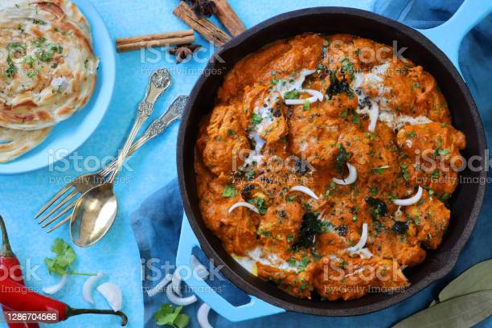

Home Page
Butter Chicken | Chicken Makhani

Butter chicken also known as Chicken Makhani is a classic Indian dish
where grilled chicken (Tandoori chicken) is simmered in a spicy,
aromatic, buttery and creamy tomato gravy.
This lip-smacking and delicious dish is hugely popular among the Indian
food lovers across the world. It is believed that
Butter chicken was invented during 1930 to 1935, by Kundan Lal Gujral,
the owner of a restaurant named Moti Mahal in Delhi, India.
The restaurant would usually have large orders of tandoori chicken
but sometimes ended up with leftovers which were dry.
Butter chicken was a way to use up the leftover dry Tandoori chicken.
The large pieces of grilled chicken were diced and simmered in a rich creamy
and buttery tomato gravy. That's how murgh makhani - chicken with butter came into existence.
How Is Butter Chicken Made?
The original & authentic Butter chicken is made with tandoori grilled chicken.
Firstly, Bone-in chicken is marinated overnight with thick yogurt, spices and herbs.
This step helps to tenderize the meat naturally and remain succulent after grilling.
Later the marinated chicken is grilled in a tandoor, a clay oven which imparts
its characteristic smoky aroma. This is then diced and simmered in a spicy buttery
and creamy tomato gravy. Since we are not equipped with tandoor at home,
the marinated chicken has to be either roasted in a pan or in an oven or grilled on open fire
(barbeque). For this post I have done it in a pan. Feel free to grill the chicken in oven or on open fire.
Instructions for making delicious Butter Chicken
Preparation
- Marinate the chicken and refrigerate.
- Make the Punjabi garam masala powder or decide on a good garam masala.
- Puree the tomatoes & cashews in a blender until smooth. Filter through a colander to remove the skin and seeds.
- If you do not own a powerful blender then soak the almonds or cashews for 1 to 2 hours and use.
- The color of your gravy may differ based on your red chili powder. You may want to arrange for a good chili powder that is less hot like kashmiri chilli powder.
Marination
- Marinating chicken helps to make it soft and tasty. Wash chicken and pat it dry. Make sure there is no excess water in the chicken. Marinate with lemon juice, chili powder and salt.
- Set this aside for 15 to 20 minutes.
- Go ahead with the second marination. Marinate with fresh yogurt, ginger garlic paste, crushed kasuri methi, oil, turmeric and garam masala.
- Marinate and refrigerate for atleast 12 hours. The longer it is marinated, the meat turns softer and just melts in the mouth. Do not use sour yogurt/ curd.
Grilling - cooking chicken
- Grill the chicken in the oven or stove top. For grilling in oven, preheat the oven to 240 C for at least 15 minutes. Skew the chicken on to soaked wooden skewers or place on a greased tray and grill for 20 to 30 minutes. In between you will have to flip to the undone side.
- grilling chicken on tawa. Add one tsp. butter and fry on high. Moisture begins to ooze out. This is very common. Keep stirring don't burn and do not over cook.
- Cook till the chicken is just done and all the moisture evaporates. Set this aside. You can even saute till the chunks turn lightly golden.
Make Butter Chicken Gravy
- Heat butter in a pan, add cinnamon, cloves and cardamom. Saute for a min or two. Add ginger garlic paste, green chilies and fry for 2 to 3 minutes till the raw smell goes off. (I did not use green chilies since my kids still cannot tolerate the heat.)
- Pour the tomato puree. Add red chili powder, sugar and salt.
- Mix and cook till the tomato puree becomes thick and begins to leave the pan.
- Pour 1 cup water. I made my cashew paste separately so added it now. Let it come to a boil and then simmer for 3 to 5 minutes.
- Add chicken and simmer for about 5 to 7 minutes till it becomes tender. The cook time may vary depending on how tender your meat is. I check with a fork, the piece just breaks upon piercing. Check the salt and spice. Adjust as needed.
- Add garam masala and crushed kasuri methi. You can adjust the consistency by adding more water, if the gravy is very thick. Mix well and simmer for about 2 to 3 minutes. Then add chilled cream. Switch off the stove. Or Take a small portion of hot gravy and add it to the cream first. Mix and then pour the cream to the curry. This prevents cream from curdling. Take care not to cook longer after adding cream. Garnish butter chicken with cream and coriander leaves. It is best served with Jeera rice , plain basmati rice, roti, naan or paratha.
Pro Tips
- Marination is the key to get flavorful, tender & succulent pieces of chicken.
- Yogurt in the marinade tenderizes the chicken so do not skip it.
- Makhani recipe never uses onion so is this butter chicken recipe. Using onion changes the taste of the dish.
- The rich taste in the gravy comes from the cashews (or almonds) & cream.
- You can make the gravy ahead and refrigerate. Just grill the marinated chicken when needed and heat up the gravy. Then add the grilled chicken.
Home Page